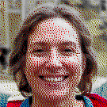

Elizabeth Alice has worked as an historian and ethicist with the Federal Temporal Anomaly Authority since 1983. Her historical research focuses on the history of the mid-Atlantic region between 1865 and 1900. Alice holds a PhD in History from Loyola University.
Alice’s work with the FTAA has focused on the ethics and impacts of temporal activity. She has worked on a variety of incursion planning projects and activities.
Alice is co-founder of the Blue Ridge Summit Cryptographic Society. She lives in Carroll Valley with her husband.
Last Updated: March 16, 1994
This site is best viewed using the NCSA Mosaic WWW browser.